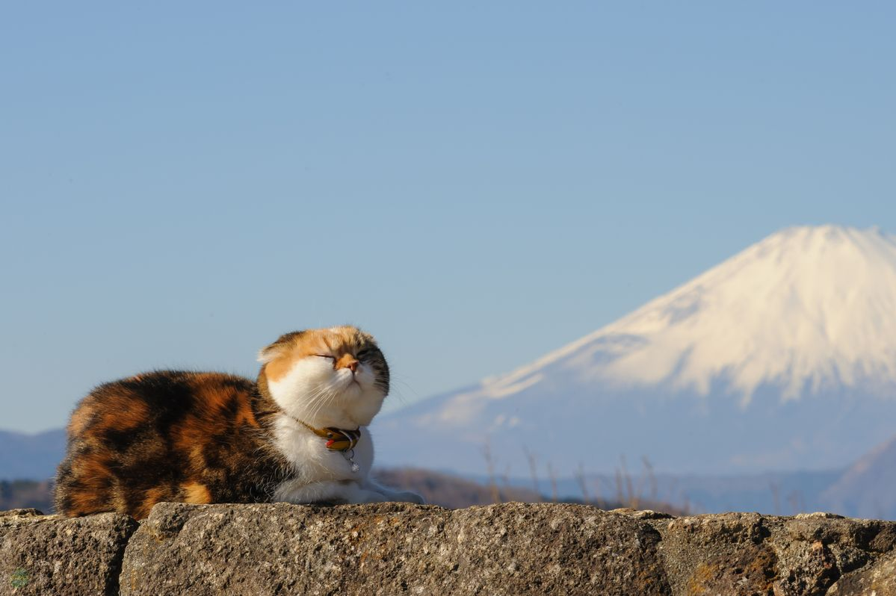

Los gatos tienen más huesos que los humanos: un gato adulto posee alrededor de 230 huesos, mientras que los humanos tienen 206, lo que les permite ser extremadamente flexibles y pasar por espacios muy estrechos.
